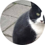
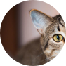
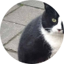
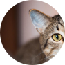
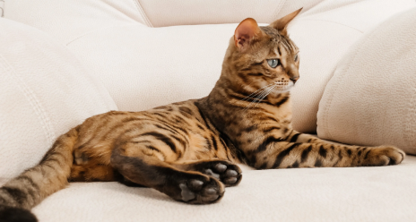
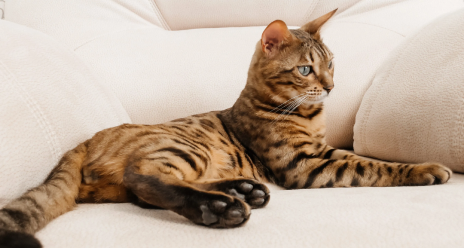

ejemplo@gmail.com
(809) 123-4567


Bienvenido
Gaterinaria es un hospital veterinario exclusivo para felinos con servicio completo. Nuestra misión es brindar atención veterinaria de la más alta calidad para su gato en un entorno relajado. Nuestra prioridad número uno es ayudar a que su gato viva una vida feliz y saludable durante el mayor tiempo posible.
Calle Francisco de Garay | Santo Domingo Este
LLAMAR PARA AGENDAR UNA CITA
VER NUESTROS SERVICIOS
SERVICIOS
Qué Hacemos
Ofrecemos atención médica completa que incluye atención preventiva, detección temprana y tratamiento de enfermedades, atención dental y atención quirúrgica.
Nos dedicamos a brindar atención individualizada y compasiva tanto a nuestros pacientes como a sus cuidadores. Entendemos que su gato no es solo una mascota, sino un miembro de la familia.
Nuestra prioridad número uno es ayudar a que su gato viva una vida feliz y saludable durante el mayor tiempo posible.
Nos dedicamos a brindar atención individualizada y compasiva tanto a nuestros pacientes como a sus cuidadores. Entendemos que su gato no es solo una mascota, sino un miembro de la familia.
Nuestra prioridad número uno es ayudar a que su gato viva una vida feliz y saludable durante el mayor tiempo posible.
Preventative Care / Vaccines
Diagnostic Services
We recommend wellness exams at least once a year until the age of 10. Once your cat reaches 10 years of age, we recommend an exam every six months.
During an exam, Dr. Cacciottoli may recommend diagnostic testing to help determine if your cat is healthy or why they may be sick.
Senior Cat Vet Care
Dental Care
At the age of 10, your cat is equivalent to a 56 year old human. We recommend routine diagnostic testing in addition to updating vaccinations for senior cats.
At some point in your cat’s life, they will need a dental cleaning. It is important to keep the teeth clean as tartar build up leads to bacteria and infection.

Surgical Procedures
Boarding and Grooming

We perform elective surgeries such as spays and neuters as well as surgery to diagnose or treat disease such as mass removals and cystotomies (bladder surgeries).
We offer boarding for our patients all year round in our cat condos. We also provide limited grooming services by appointment including nail trims and sanitary shaves.
TESTIMONIOS
De nuestros visitantes
“Estas personas son el equipo de veterinarios amantes de los animales más increíble con el que mi esposa y yo hemos tenido el placer de trabajar. Se especializan en medicina felina y hacen todo lo posible para asegurarse de que los miembros peludos de su familia reciban el mejor cuidado posible. Los hemos utilizado durante años. ¡Reciben mi más alta recomendación!”
- Alguien
“¡El personal aquí es maravilloso! La Dra. Cacciottoli es estupenda, se preocupa genuinamente por asegurarse de que los pacientes tengan una visita lo más libre de estrés posible y también dedica una buena cantidad de tiempo a explicarles a los ansiosos padres de gatitos cómo cuidarlos. Sus precios son razonables y el personal de apoyo es excelente. ¡Definitivamente recomiendo Cat Clinic para las necesidades de sus bebés peludos!”
- Otra persona
 



Información de Contacto
Calle Francisco de Garay | SDE
Lunes a Viernes | 8 AM a 6 PM
Sábado y Domingo | 9 AM a 2 PM
(809) 123-4567
ejemplo@gmail.com
Horarios
 
